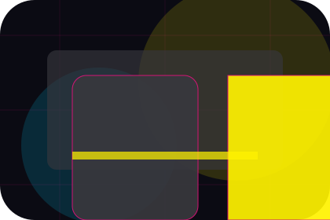
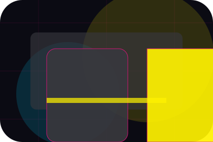
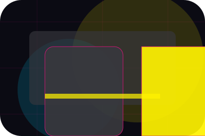
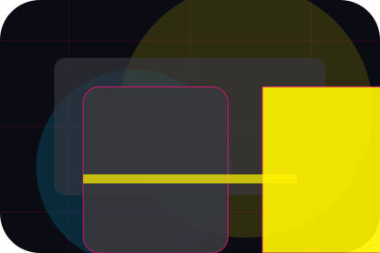
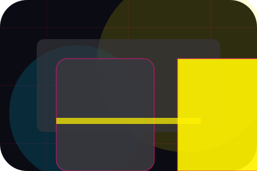
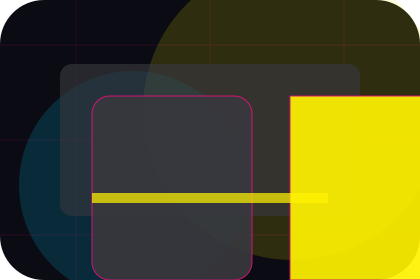
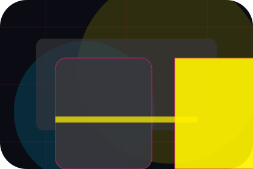
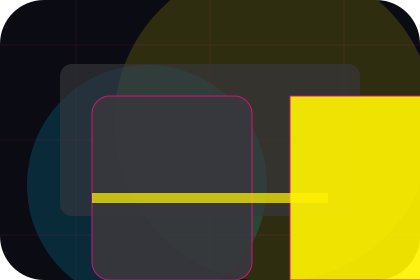
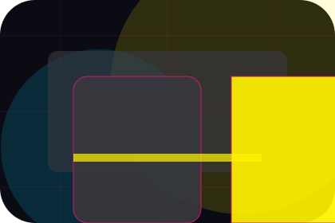
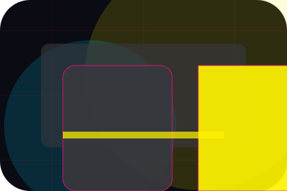

Better State
Promise defines what becomes clearer, easier, or safer when Wave is the chosen route.
Media
Neon editorial news grid for audience reach and timing.

Home / 02
Promise defines the better state Wave is built to create, with enough detail to make the promise believable.
A media site with bold editorial grid, neon category strips, episode cards, and advertiser download routes. The section grounds that direction in concrete benefits, visible tradeoffs, and a next route visitors can use when the promise feels relevant.
Open Network
Promise defines what becomes clearer, easier, or safer when Wave is the chosen route.

The benefit is tied to audience reach and timing, not a vague quality claim.

Visitors get a linked path to compare the promise against services, standards, or examples.
Home / 03
Featured adds professional context to the home route, using the neon editorial news grid structure to support audience reach and timing before visitors choose a next step.
Wave uses angled story cards and focused copy to make the decision easier to scan, aligning the section with audience reach and timing rather than filling space.
Open ShowsFeatured gives the page a specific angle instead of repeating the navigation label.
The angled story cards show what to compare, what to avoid, and what matters most for media, broadcasting & digital content visitors.

The final cue points to a useful internal route so the section keeps the journey moving.
Home / 04
Shows adds professional context to the home route, using the neon editorial news grid structure to support audience reach and timing before visitors choose a next step.
Wave uses angled story cards and focused copy to make the decision easier to scan, aligning the section with audience reach and timing rather than filling space.
Open ContentWave structures shows around context, judgment, and a clear next route so visitors can compare the block quickly before they advertise with the team.
Advertise With UsHome / 05
Schedule adds professional context to the home route, using the neon editorial news grid structure to support audience reach and timing before visitors choose a next step.
Wave uses angled story cards and focused copy to make the decision easier to scan, aligning the section with audience reach and timing rather than filling space.
Open ScheduleSchedule gives the page a specific angle instead of repeating the navigation label.

The angled story cards show what to compare, what to avoid, and what matters most for media, broadcasting & digital content visitors.

The final cue points to a useful internal route so the section keeps the journey moving.
Angular media hero
Select the closest route and Wave keeps the next step, proof, and follow-up expectation aligned with audience reach and timing.
Home / 06
Audience adds professional context to the home route, using the neon editorial news grid structure to support audience reach and timing before visitors choose a next step.
Wave uses angled story cards and focused copy to make the decision easier to scan, aligning the section with audience reach and timing rather than filling space.
Open AdvertiseAudience gives the page a specific angle instead of repeating the navigation label.
Home / 07
Advertise adds professional context to the home route, using the neon editorial news grid structure to support audience reach and timing before visitors choose a next step.
Wave uses angled story cards and focused copy to make the decision easier to scan, aligning the section with audience reach and timing rather than filling space.
Open PressAdvertise gives the page a specific angle instead of repeating the navigation label.

The angled story cards show what to compare, what to avoid, and what matters most for media, broadcasting & digital content visitors.

The final cue points to a useful internal route so the section keeps the journey moving.
Home / 08
Trust gives the proof layer for home: standards, evidence, and reassurance that make the next decision feel grounded.
Instead of relying on vague claims, Wave presents visible standards, process cues, and proof artifacts that help media visitors judge fit.
Open CareersVisible proof that helps visitors believe the claims behind trust.
The quality, safety, or operating expectation this section makes explicit.
What becomes clearer before someone decides whether to advertise with the team.
Home / 09
Questions handles buying doubts directly so visitors can understand timing, fit, limits, and the safest next step.
Answers are short by design: enough to remove hesitation, not so much that the page turns into documentation before the visitor can act.
Open ContactQuestions gives the page a specific angle instead of repeating the navigation label.

The angled story cards show what to compare, what to avoid, and what matters most for media, broadcasting & digital content visitors.

The final cue points to a useful internal route so the section keeps the journey moving.
Wave starts with a focused intake so the recommendation matches the visitor's context, risk, timing, and readiness.
Each route explains inclusions, exclusions, documents, timing, and the decision points that affect final delivery.
The theme uses neon editorial news grid, angled story cards, and show schedule filter, episode cards, advertise kit download rather than a shared template rhythm.
Angular media hero
Select the closest route and Wave keeps the next step, proof, and follow-up expectation aligned with audience reach and timing.
Home / 10
Wave closes the home route with a clear action, a quick reminder of the value, and a low-friction way to advertise with the team.
Visitors who are ready can use the primary action. Visitors who are still comparing can scan the section links, proof, and support routes before they advertise with the team.
Advertise With UsThe final block keeps the choice simple: act now, compare one more proof route, or send enough detail for a focused response.
Advertise With Usaudience reach and timing
A media site with bold editorial grid, neon category strips, episode cards, and advertiser download routes. Home ends with a direct path to advertise with the team, plus enough context for visitors who still need to compare.
 Advertise With Us
Advertise With Us